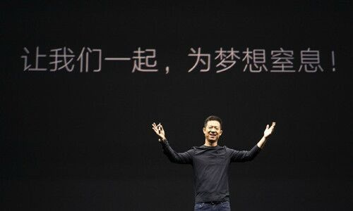

回复@守正v出奇:明晚开车。今天有可能推送一篇别的，不确定。//@守正v出奇:e大这是 写完开车稿了吗？ 还是等晚上中报全部披露以后跑下数据在发车？//@ETF拯救世界:回复@XDrX:要看看当初减持的时候说把几十亿免息借给公司5年这个承诺有没有法律效力了。//@XDrX:贾跃亭做的事情没违反王法吧？@互联网的那点事:【贾跃亭姐弟已收回对乐视网全部借款】乐视网上半年年报显示，贾跃亭贾跃芳姐弟之前套现时承诺借给乐视网的无息借款总计74亿，然而最高峰时贾氏姐弟借给乐视网不超过30亿，2016年底，只剩下4亿多，到了2017年6月30日竟已全部抽走。 
回复@XDrX:要看看当初减持的时候说把几十亿免息借给公司5年这个承诺有没有法律效力了。//@XDrX:贾跃亭做的事情没违反王法吧？//@ETF拯救世界:哈哈哈哈哈哈哈哈。太NB了。还有没有王法了……@互联网的那点事:【贾跃亭姐弟已收回对乐视网全部借款】乐视网上半年年报显示，贾跃亭贾跃芳姐弟之前套现时承诺借给乐视网的无息借款总计74亿，然而最高峰时贾氏姐弟借给乐视网不超过30亿，2016年底，只剩下4亿多，到了2017年6月30日竟已全部抽走。